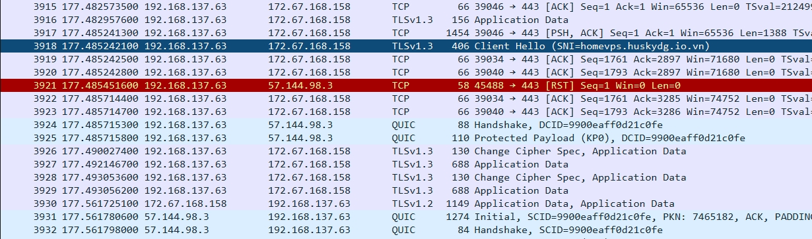
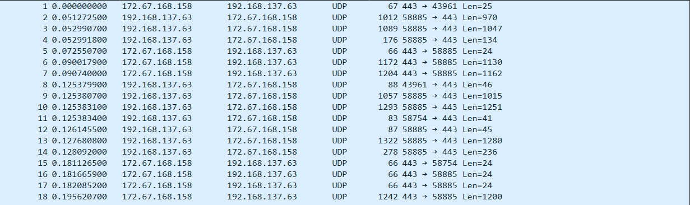

How an inverted VLESS configuration exposes the hidden intersection of carrier DPI firewalls and global Anycast CDNs — a diary, a diagram, and a working PoC.
On a rainy evening, a friend forwarded a cryptic string — a customized VLESS configuration rumored to grant unrestricted global internet access using nothing more than a carrier's zero-rated entertainment data bundle (in this case, an unmetered TikTok-only plan).
It worked flawlessly — 4K YouTube with zero buffering, and the primary cellular balance stayed completely untouched. As a programmer, that flawless result immediately triggered a cognitive itch: a black box whose mechanics contradicted basic networking principles.
2
The Great Paradox: Everything Is Inverted
Isolating the query string revealed a structural paradox that inverts core routing theory:
📮
Server Address field
Points to TikTok's own official backend node — not a leased VPS.
🪪
SNI field
Displays the provider's real domain — the exact opposite of what you'd expect for firewall evasion.
💡
By standard routing logic, connecting to Node B means your Address field resolves to Node B. Here the client connects to TikTok's cloud, yet traffic exits through a third-party VPS — the obsession that kicked off the investigation.
3
Demystifying the Pipeline
Step A — The Blind Spot of DPI
Carrier billing firewalls whitelist purely by destination IP/ASN range. The SNI field — plainly visible, unencrypted, in the TLS ClientHello — is never actually inspected. If it were, this configuration would be rejected instantly.
Step B — Multi-Tenant CDN Convergence
TikTok distributes its media workloads across Cloudflare's global Anycast edge. Independent proxy providers deploy their own routing front-ends on that very same shared address space.
Step C — The Layer-7 Redirect Handover
At the Cloudflare edge, TLS terminates and the CDN reads the real SNI/Host header, discovers it maps to a different tenant, and reroutes the decrypted stream to that provider's upstream VPS — which decodes the VLESS tunnel and proxies onward to the open web.
🔑
The core exploit isn't an "outer vs inner header" trick — the SNI is sitting in plaintext the whole time. It's simply never checked.
4
Architecture: PoC → Custom Domain → Production
This repo is a localized staging environment to validate the Layer-7 DPI bypass before committing to real infrastructure.
Quick test1. Ephemeral Cloudflare Tunnel
cloudflared tunnel --url generates a random *.trycloudflare.com subdomain on every run — free and zero-config, but not persistent.
Supported in main.py2. Custom Domain via Named Tunnel
Supplying a TUNNEL_TOKEN and a custom WS_HOST switches to a persistent Cloudflare Named Tunnel — a fixed domain with no public IP required on your homelab box.
Commercial3. Production Infrastructure
A dedicated Ubuntu VPS runs Xray natively on ports 80/443, fronted by Cloudflare for SaaS (Custom Hostnames + Fallback Origin) to permanently separate gateway IPs from the core proxy server.
5
Transport Comparison: WebSocket vs. xHTTP
The shift from VLESS + WebSocket to VLESS + xHTTP (packet-up mode) is a major turning point behind Cloudflare's CDN.
Criteria
VLESS + WebSocket
VLESS + xHTTP (packet-up)
Protocol nature
HTTP/1.1 Upgrade to WebSocket (TCP)
HTTP/2 or HTTP/3 stream (POST/upload)
Data mechanism
Full-duplex connection
Separate up/down flows (packet-up)
CDN compatibility
Good, prone to throttling/CAPTCHA
Excellent — mimics a plain HTTP POST
Latency
Higher (handshake + HOL blocking)
Lower (multiplexing, 0/1-RTT)
Bandwidth
Prone to congestion on large transfers
Higher & more stable
Stealth
Easier for modern DPI to fingerprint
Harder to detect — looks like file upload traffic
⚡
Bottom line: WS is the proven legendary workhorse; xHTTP packet-up is the new standard — lower ping, higher throughput, better resilience against DPI. main.py supports both at once via TRANSPORT=websocket,xhttp.
Real-World Speedtest
VLESS + WebSocket + TLS — 166 Mbps down / 41.3 Mbps upVLESS + xHTTP + TLS + ALPN H3 — 183 Mbps down / 188 Mbps up
Wireshark Packet Inspection
Capturing both transports side by side on the wire reveals a second, more subtle divide: WebSocket rides on classic TCP/TLS 1.3, while xHTTP over HTTP/3 rides on QUIC/UDP — and the two look completely different under a packet analyzer.

VLESS + WebSocket — plain TCP handshake, then a visible TLS 1.3 Client Hello with the SNI (homevps.huskydg.io.vn) sitting in cleartext on the wire.

VLESS + xHTTP (H3) — pure UDP/QUIC. No plaintext handshake frame is visible at all — only opaque Initial / Handshake datagrams.
Why QUIC hides its own Client Hello
QUIC has no plaintext "Client Hello" the way TCP-based TLS does, because its very first packet — the Initial packet — is already partially encrypted using fixed, publicly-derived initial secrets, and the actual TLS 1.3 Client Hello is wrapped inside QUIC's own Crypto Frame from the first byte onward.
HTTP/2-over-TCP vs. QUIC framing
With HTTP/2 on TCP, the TCP handshake and the TLS handshake both happen fully in the open before any HTTP/2 data flows — so Wireshark shows a plain Client Hello at the transport/security layer. QUIC's Long/Short Header only exposes Version, Destination/Source Connection ID and Packet Number; the handshake itself never appears as readable bytes in the packet tree, only as generic Crypto Frame content inside an Initial packet.
Decrypting it anyway
To actually see the QUIC Client Hello in Wireshark: set the SSLKEYLOGFILE environment variable on the browser/client generating the QUIC traffic to log session keys, then point Wireshark at that file under Preferences → Protocols → TLS → (Pre)-Master-Secret log filename. Only then can Wireshark decrypt the Crypto Frame and render the Client Hello under the TLS sub-tree of the QUIC packet.
🔍
Takeaway: the WebSocket capture leaks the real SNI in cleartext — that's the exact field carrier DPI could check but doesn't. The xHTTP/QUIC capture leaks nothing readable at all without the session keys, which is why it's the harder transport to fingerprint.
6
Script Features
⚙️
Dynamic Environment Orchestration
Automated verification and generation of localized .env dependencies.
🔀
Quick & Named Tunnels
Auto-detects whether to launch an ephemeral trycloudflare.com tunnel or a persistent custom domain.
🛡️
WARP Outbound Integration
Optional Cloudflare WARP egress via wgcf-cli for privacy and bypassing strict IP bans.
📦
Auto-Architecture Binaries
Bundled injectors detect platform kernels and pull current Xray / cloudflared / wgcf runtimes.
📊
Async Logging & Web UI Monitor
Real-time log relay through an integrated background HTTP daemon.
🔗
Webhook & JSON Export
Auto-generates frp_info.config / frp_info.json, optionally dispatched to a WEBHOOK_URL.
7
Installation & Usage
Shell
# Clone the source code
git clone https://github.com/vincentng295/xray_vless_ws_server
# Move into the project directory
cd xray_vless_ws_server
# Install the required Python dependencies
pip install -r requirements.txt
# Start the server
python main.py
PORTComma-separated inbound ports/interfaces for Xray.
XRAY_UUIDUUID string used for VLESS client authentication.
FAKE_SNIZero-rated domain used by clients for DNS/IP resolution (e.g. a TikTok CDN domain).
WS_PATHWebSocket / xHTTP path endpoint.
WS_HOSTCustom domain for your Named Tunnel, or trycloudflare.com for quick tunnels.
TRANSPORTwebsocket, xhttp, or both at once. Dual mode demuxes transparently over the same port/path.
XHTTP_MODEpacket-up (recommended), stream-up, or stream-one. Only used with xHTTP.
TUNNEL_TOKENCloudflare Tunnel Token for a persistent custom domain. Leave blank for free temporary URLs.
ENABLE_WARPSet true to route Xray outbound through Cloudflare WARP.
WEBHOOK_URLOptional endpoint to receive connection payloads on tunnel init.
9
Engineering Reflection
This isn't a system bug — it's an elegant, creative exploitation of cloud infrastructure. Carrier inspection only evaluates the outer perimeter of a packet, while global CDNs process the inner intent.
⚠️
This is a cat-and-mouse game. The moment carriers start reading the SNI already sitting in plaintext — checking it against a known TikTok hostname — this configuration breaks instantly. Passing unencrypted personal traffic through an unverified foreign VPS also carries real privacy risk.
Behind every paradox on the web lies a deeply logical narrative crafted by clever engineering — and a reminder that in networking, nothing is truly free, and nothing is completely secure.